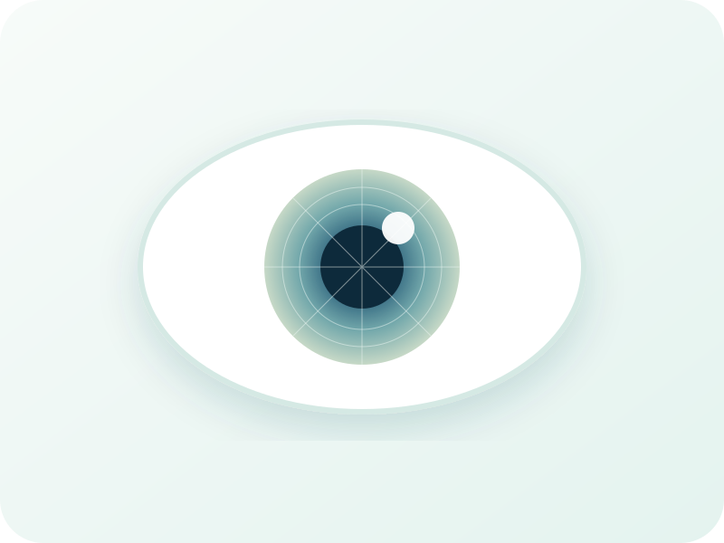

Keratoconus
Corneal imaging, vision assessment, follow-up and tailored visual correction.
Learn moreDetailed corneal assessment, custom scleral and RGP lenses, bespoke ocular prosthetics, and complete lens-care solutions.
Specialised services that begin with detailed assessment and extend through fitting, prosthetics and daily care.
Corneal imaging, vision assessment, follow-up and tailored visual correction.
Learn moreScleral, RGP and customised designs for irregular corneas and complex needs.
Learn moreCustom cosmetic ocular prosthetics with fitting, follow-up and maintenance.
Learn moreCare products and accessories for scleral, RGP and soft lenses.
Learn moreCorneal maps help describe shape and irregularity, compare change over time, and guide lens selection and design.


Successful fitting depends on measurement, trial assessment, movement, comfort, visual quality and ocular-surface health.
See the fitting journeyThe service begins with assessment and measurement, followed by colour-detail matching, fitting, adjustment and care guidance.
Service details
Branches in Al Buraimi, Liwa, Dhank and Yanqul, with guidance to the most suitable branch for your service.
Each case needs corneal assessment, imaging and customised trial measurements to determine the most suitable lens.
Follow-up commonly includes refraction, ocular-surface assessment, corneal imaging and comparison with previous results.
Yes. Cleaning, conditioning, preservative-free saline and insertion/removal accessories are available through NVO Shop.
Send your question or available reports and we will guide you to the suitable service and branch.